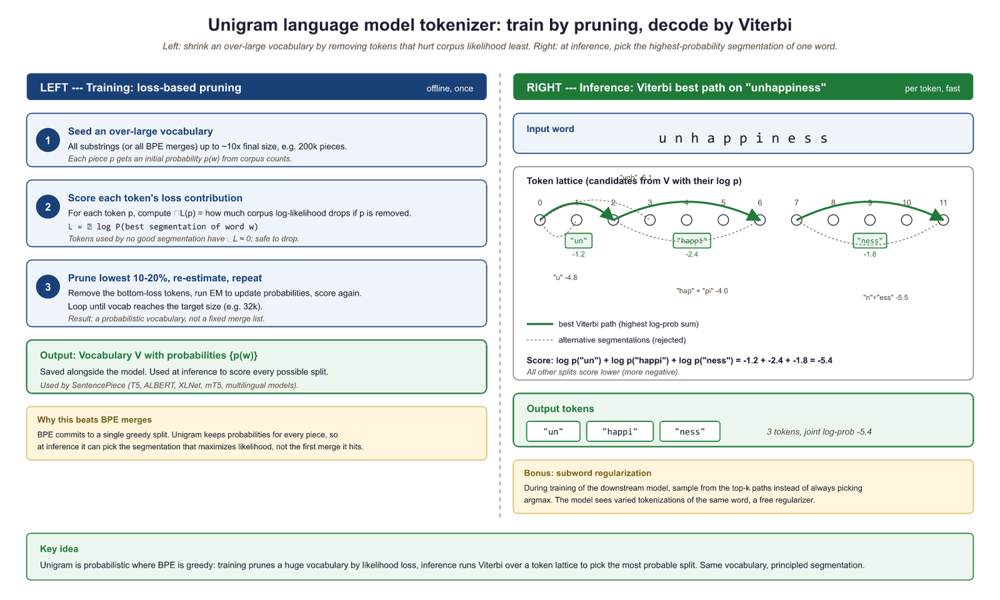
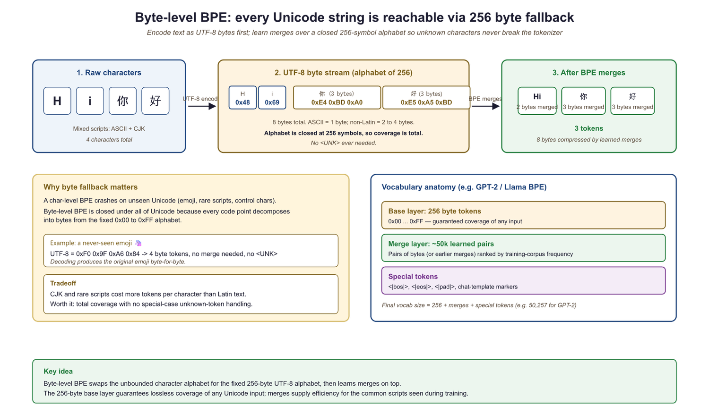

I merged byte pairs until "un" and "believable" became one token. Then I tried "un" and "fortunate." We don't talk about that.
Token, Compulsively Merging AI Agent
Prerequisites
You should have read Section 2.1: Why Tokenization Matters, which covers the vocabulary-coverage tradeoff and the problems with word-level and character-level tokenization that motivate subword methods. Familiarity with basic probability and information theory concepts (frequency, log-likelihood) helps when understanding the Unigram model, though it is not strictly required.
BPE and WordPiece are bottom-up: they start with characters and build larger tokens by merging. Unigram is top-down: it starts with a large set of candidates and prunes down. Think of it this way: BPE is like building words from letter tiles by discovering common pairs. Unigram is like starting with a full dictionary and removing the least useful entries. As we discussed in Section 2.1, the vocabulary size tradeoff governs this entire design space.
A practical advantage of Unigram is that it produces multiple possible segmentations with associated probabilities, which can be used for data augmentation during training (by sampling different segmentations of the same word). This technique, known as subword regularization (Kudo, 2018), has been shown to improve model robustness.
Overview of Subword Methods
You are about to learn the three algorithms that decide how every modern LLM reads text. If you have ever wondered why GPT tokenizes "ChatGPT" differently from "chatgpt," or why a simple Korean sentence consumes three times more tokens than its English translation, the answers lie in these algorithms. All subword tokenization algorithms solve the same problem: given a training corpus, learn a vocabulary of subword units that can represent any text efficiently. They differ in how they build the vocabulary and how they segment new text at inference time. The three dominant families are:
- Byte Pair Encoding (BPE): a bottom-up, merge-based approach used by GPT-2, GPT-3, GPT-4, Llama, and most modern LLMs (Chapter 7).
- WordPiece: a variant of BPE that uses a likelihood-based merge criterion, used by Section 6.1 and its derivatives.
- Unigram Language Model: a top-down, pruning-based approach that assigns probabilities to all subword candidates and uses the Viterbi algorithm for segmentation, used by T5, ALBERT, and XLNet.
In addition, we will cover byte-level BPE (which eliminates the need for character-level preprocessing) and tokenizer-free models (which bypass discrete tokenization entirely).
Byte Pair Encoding (BPE)

BPE started life as a data compression algorithm in 1994, with no connection to language modeling whatsoever. Two decades later, someone tried it on text tokenization almost as an afterthought, and it became the backbone of nearly every modern LLM. Sometimes the best tools are borrowed from entirely different fields.
The BPE Merge Algorithm
BPE was originally a data compression algorithm introduced by Philip Gage in 1994. Sennrich et al. (2016) adapted it for NLP by applying it to sequences of characters rather than bytes. The algorithm is elegantly simple:
- Start with a vocabulary containing all individual characters found in the training corpus (plus any special tokens).
- Count the frequency of every adjacent pair of tokens in the corpus.
- Find the most frequent pair and merge it into a new token.
- Add the new token to the vocabulary.
- Replace all occurrences of the pair in the corpus with the new merged token.
- Repeat from step 2 until the desired vocabulary size is reached.
The sequence of merges is recorded in a merge table, which is all you need (along with the base vocabulary) to tokenize new text at inference time. To encode a new word, you start with its characters and apply the merges in the same order they were learned. In Chapter 03, you will learn how these token IDs are converted into embedding vectors and processed by attention mechanisms.
Input: training corpus C, target vocabulary size V
Output: vocabulary, ordered merge table
vocab = set of all unique characters in C
merges = []
while |vocab| < V:
pairs = count_adjacent_pairs(C)
if no pairs remain:
break
best = argmax(a,b) ∈ pairs freq(a, b)
new_token = concat(best.a, best.b)
vocab.add(new_token)
merges.append(best)
// Replace all occurrences of the pair in the corpus
C = replace_all(C, best.a + best.b, new_token)
return vocab, merges
# Production equivalent using HuggingFace tokenizers (Rust-backed)
from tokenizers import Tokenizer
from tokenizers.models import BPE
from tokenizers.trainers import BpeTrainer
from tokenizers.pre_tokenizers import Whitespace
tokenizer = Tokenizer(BPE(unk_token="[UNK]"))
tokenizer.pre_tokenizer = Whitespace()
trainer = BpeTrainer(vocab_size=1000, special_tokens=["[UNK]"])
tokenizer.train(files=["corpus.txt"], trainer=trainer)
Lab: Implementing BPE from Scratch
Below is a minimal but complete BPE implementation in Python. Study the code carefully; every line maps directly to a step in the algorithm described above.
# Minimal BPE implementation from scratch
from collections import Counter
def get_vocab(corpus):
"""Split each word into characters and add end-of-word marker."""
words = corpus.split()
word_freqs = Counter(words)
vocab = {}
for word, freq in word_freqs.items():
# Each word becomes a tuple of characters + end-of-word symbol
symbols = tuple(list(word) + ["</w>"])
vocab[symbols] = freq
return vocab
def get_pair_counts(vocab):
"""Count frequency of all adjacent symbol pairs."""
pairs = Counter()
for symbols, freq in vocab.items():
for i in range(len(symbols) - 1):
pairs[(symbols[i], symbols[i + 1])] += freq
return pairs
def merge_pair(pair, vocab):
"""Merge all occurrences of a pair in the vocabulary."""
new_vocab = {}
bigram = pair
for symbols, freq in vocab.items():
new_symbols = []
i = 0
while i < len(symbols):
# Look for the pair at position i
if i < len(symbols) - 1 and symbols[i] == bigram[0] and symbols[i+1] == bigram[1]:
new_symbols.append(bigram[0] + bigram[1])
i += 2
else:
new_symbols.append(symbols[i])
i += 1
new_vocab[tuple(new_symbols)] = freq
return new_vocab
def train_bpe(corpus, num_merges):
"""Train BPE and return the merge table and final vocabulary."""
vocab = get_vocab(corpus)
merges = []
for step in range(num_merges):
pairs = get_pair_counts(vocab)
if not pairs:
break
best_pair = max(pairs, key=pairs.get)
merges.append(best_pair)
vocab = merge_pair(best_pair, vocab)
print(f"Merge {step+1}: {best_pair} -> "
f"'{best_pair[0]+best_pair[1]}' (freq={pairs[best_pair]})")
return merges, vocab
# Train on a small corpus
corpus = "low low low lower lower lowest newest widest"
merges, final_vocab = train_bpe(corpus, num_merges=10)
print("\nFinal vocabulary:")
for symbols, freq in sorted(final_vocab.items(), key=lambda x: -x[1]):
print(f" {' '.join(symbols):30s} (freq={freq})")The implementation above builds BPE tokenization from scratch for pedagogical clarity. In production, use HuggingFace tokenizers (install: pip install tokenizers) or SentencePiece (install: pip install sentencepiece), which provide optimized, battle-tested implementations:
from transformers import AutoTokenizer
tok = AutoTokenizer.from_pretrained("bert-base-uncased") # WordPiece
print(tok.tokenize("unhelpfulness"))
# ['un', '##help', '##ful', '##ness']
tok2 = AutoTokenizer.from_pretrained("gpt2") # BPE
print(tok2.tokenize("unhelpfulness"))
# ['un', 'help', 'fulness']Full examples of both libraries appear later in this section (Code Fragments 5 and 6).
To tokenize a new word, you start with its characters, then apply the learned merges in priority order (the order they were learned during training). The first merge in the table that matches any adjacent pair in the current sequence is applied, and you repeat until no more merges apply. This greedy strategy is deterministic and fast.
This is not the same as applying the most frequent pair first on the new text; it is replaying the training-time merge history. The priority of each merge was fixed during training and does not change based on the input being tokenized.
Who: An NLP engineer at an e-commerce company expanding from English-only to 12 languages.
Situation: The team was building a product search system using BERT-based embeddings. Their existing English BPE tokenizer worked well, but they needed to support Japanese, Korean, Arabic, and nine other languages.
Problem: The English-trained BPE tokenizer split Japanese text into individual bytes, producing sequences 5x longer than English for equivalent queries. This blew past their 512-token context limit and tripled inference latency.
Dilemma: They could train a new BPE tokenizer on multilingual data (risking English quality regression), adopt SentencePiece with a Unigram model (better multilingual coverage but unfamiliar tooling), or use separate tokenizers per language (simpler but harder to maintain).
Decision: They chose SentencePiece with a Unigram model trained on a balanced multilingual corpus, using a vocabulary of 64K tokens. The Unigram model's probabilistic segmentation handled agglutinative languages like Korean and Turkish more gracefully than BPE.
How: They sampled training data proportionally (with upsampling for low-resource languages), trained the tokenizer using SentencePiece's built-in Unigram trainer, and validated fertility ratios across all 12 languages before deployment.
Result: Japanese and Korean fertility dropped from 4.8x to 1.6x relative to English. Average query latency returned to within 15% of the English-only baseline, and search relevance scores improved by 22% for non-Latin-script languages.
Lesson: Tokenizer choice has outsized impact on multilingual systems. A model can only be as multilingual as its tokenizer allows.
Encoding New Text with Learned Merges
Once the merge table is learned during training, new words are tokenized by applying those merges in order.
# Encode a new word using the learned merge table
def encode_word(word, merges):
"""Tokenize a single word using learned BPE merges."""
symbols = list(word) + ["</w>"]
for left, right in merges:
i = 0
while i < len(symbols) - 1:
if symbols[i] == left and symbols[i + 1] == right:
symbols = symbols[:i] + [left + right] + symbols[i+2:]
else:
i += 1
return symbols
# Test on known and unknown words
test_words = ["low", "lower", "lowest", "newer", "slowly"]
for word in test_words:
tokens = encode_word(word, merges)
print(f" '{word}' -> {tokens}")Notice how "lowest" gets efficiently segmented into ["low", "est</w>"], reusing subword units learned from the training corpus. The unseen word "slowly" is handled by falling back to smaller units where no merges apply.
WordPiece
WordPiece, developed at Google for the neural machine translation system and later adopted by BERT (one of the landmark models discussed in Section 4.4), is closely related to BPE. The key difference is in the merge criterion. While BPE merges the most frequent pair, WordPiece merges the pair that maximizes the likelihood of the training data. Specifically, it merges the pair (A, B) that maximizes:
This score is essentially the pointwise mutual information (PMI) of the pair, measuring how much more often A and B appear together than expected by chance. It favors merging pairs where the combination AB appears much more often than you would expect if A and B occurred independently. In practice, this tends to produce linguistically meaningful subwords, because morphological boundaries (prefixes, suffixes, roots) tend to co-occur at rates much higher than chance.
WordPiece at Inference: MaxMatch
At inference time, WordPiece uses a greedy longest-match-first (MaxMatch)
strategy. Given a word, it tries to match the longest possible token from the vocabulary
starting from the left. If no match is found, it falls back to the longest match for
the remaining substring. Continuation tokens are typically prefixed with ##
to indicate they are not word-initial.
# Simulated WordPiece MaxMatch tokenization
def wordpiece_tokenize(word, vocab, max_token_len=20):
"""Greedy longest-match-first tokenization."""
tokens = []
start = 0
while start < len(word):
end = min(start + max_token_len, len(word))
found = False
while end > start:
substr = word[start:end]
if start > 0:
substr = "##" + substr # continuation prefix
if substr in vocab:
tokens.append(substr)
found = True
break
end -= 1
if not found:
tokens.append("[UNK]")
start += 1
continue
start = end
return tokens
# Example vocabulary (simplified)
vocab = {"un", "##help", "##ful", "##ness", "##able", "token",
"##ization", "##ize", "the", "##s", "play", "##ing",
"##er", "##ed", "help", "##less"}
for word in ["tokenization", "unhelpfulness", "players", "helpless"]:
tokens = wordpiece_tokenize(word, vocab)
print(f" '{word}' -> {tokens}")In practice, use HuggingFace tokenizers to load any pretrained tokenizer in one line:
pip install transformers
BPE builds its vocabulary bottom-up by frequency counting; WordPiece builds its vocabulary bottom-up by likelihood maximization. At inference, BPE replays its merge sequence; WordPiece uses greedy longest-match. In practice, both produce similar results, and the choice between them often comes down to the framework and codebase rather than a fundamental quality difference.
The core difference in one sentence: BPE asks "what pair appears most often?" WordPiece asks "what pair appears most surprisingly often relative to its parts?"
Concrete example: Suppose in our training corpus the pair ("t", "h") appears 10,000 times, while ("x", "z") appears only 50 times. BPE merges ("t", "h") first because 10,000 > 50. But WordPiece computes the score as: score(a, b) = freq(ab) / (freq(a) × freq(b)). If "t" and "h" are each extremely common on their own (say 500,000 and 400,000 occurrences), then 10,000 / (500,000 × 400,000) is tiny. Meanwhile, if "x" and "z" are rare (200 and 180), then 50 / (200 × 180) is much larger. WordPiece would merge ("x", "z") first because their co-occurrence is surprising given how rare each part is individually.
Unigram Language Model

Both BPE and WordPiece build their vocabularies from the bottom up, starting with individual characters and merging upward. The Unigram model takes the opposite direction entirely. Proposed by Kudo (2018) and implemented in the SentencePiece (a Google-developed tokenization library), it starts from the top down. Instead of starting small and merging upward, it starts with a large initial vocabulary of candidate subwords and iteratively prunes the least useful ones.
Training Procedure
The Unigram model assigns a probability to each possible segmentation of a word. Given a word $x$, the probability of a particular segmentation $S = (t_{1}, t_{2}, ..., t_{m})$ is:
The overall corpus loss is the negative log-likelihood over all words:
The training procedure alternates between finding the best segmentation of the corpus and removing the least useful tokens from the vocabulary:
- Begin with a large candidate vocabulary (for example, all substrings up to a certain length that appear in the training data).
- Assign a probability to each subword based on its frequency in the corpus, forming a unigram language model: $P(token) = freq(token) / total_{freq}$.
- For each word in the training data, find the most probable segmentation using the Viterbi algorithm (dynamic programming over all possible tokenizations).
- Compute the overall log-likelihood of the corpus under the current model.
- For each subword in the vocabulary, measure how much worse the model's predictions would become if that subword were removed.
- Remove the subwords whose removal causes the smallest decrease (they are the least useful).
- Repeat from step 2 until the vocabulary reaches the target size.
A 10-character word has 512 possible segmentations; enumerating them all is impractical, so we use dynamic programming. The Viterbi algorithm finds the optimal path through a sequence of possible states. Consider tokenizing "cats" with a small unigram vocabulary, processing left to right to find the best segmentation at each position.
Suppose our vocabulary has these subwords and log-probabilities:
| Subword | log P |
|---|---|
| c | -2.5 |
| a | -2.3 |
| t | -2.4 |
| s | -2.6 |
| ca | -1.8 |
| cat | -1.2 |
| cats | -3.0 |
| at | -1.9 |
| ats | -2.1 |
| ts | -2.0 |
Step 1: Initialize. Create a score array for positions 0 through 4 (one past each character). Set score[0] = 0 (the start has no cost).
Step 2: Fill position 1 (after "c"). The only subword ending here is "c" (log P = -2.5). Best path to position 1: ["c"], score = -2.5.
Step 3: Fill position 2 (after "ca"). Two candidates reach here:
- "a" from position 1: score[1] + log P("a") = -2.5 + (-2.3) = -4.8
- "ca" from position 0: score[0] + log P("ca") = 0 + (-1.8) = -1.8 (winner)
Best path to position 2: ["ca"], score = -1.8.
Step 4: Fill position 3 (after "cat"). Three candidates:
- "t" from position 2: score[2] + log P("t") = -1.8 + (-2.4) = -4.2
- "at" from position 1: score[1] + log P("at") = -2.5 + (-1.9) = -4.4
- "cat" from position 0: score[0] + log P("cat") = 0 + (-1.2) = -1.2 (winner)
Best path to position 3: ["cat"], score = -1.2.
Step 5: Fill position 4 (after "cats"). Four candidates:
- "s" from position 3: score[3] + log P("s") = -1.2 + (-2.6) = -3.8 (winner)
- "ts" from position 2: score[2] + log P("ts") = -1.8 + (-2.0) = -3.8 (tie)
- "ats" from position 1: score[1] + log P("ats") = -2.5 + (-2.1) = -4.6
- "cats" from position 0: score[0] + log P("cats") = 0 + (-3.0) = -3.0 (actually best!)
Best path to position 4: ["cats"], score = -3.0. But if "cats" were not in the vocabulary,
the best segmentation would be ["cat", "s"] with score -3.8.
Why dynamic programming? A 20-character word has over 500,000 possible segmentations. Viterbi avoids enumerating them by building optimal partial solutions left to right, keeping only the single best path at each position. This reduces exponential time to O(n × m), where n is the word length and m is the maximum subword length.
Comparison of the Three Methods
| Property | BPE | WordPiece | Unigram |
|---|---|---|---|
| Build direction | Bottom-up (merge) | Bottom-up (merge) | Top-down (prune) |
| Merge criterion | Most frequent pair | Max likelihood gain | Min likelihood loss on removal |
| Inference method | Replay merges | Greedy MaxMatch | Viterbi (dynamic programming) |
| Segmentation | Deterministic | Deterministic | Probabilistic (can sample) |
| Notable users | GPT-2/3/4, Llama, Mistral | BERT, DistilBERT | T5, ALBERT, XLNet |
| Library | tiktoken, HF tokenizers | HF tokenizers | SentencePiece |
You need to know all three algorithms because you will encounter all three in production: GPT models use BPE, BERT uses WordPiece, and T5 uses Unigram. Understanding the differences helps you debug tokenization issues specific to each model.
After learning three different tokenization algorithms, readers sometimes conclude that the choice of BPE vs. WordPiece vs. Unigram is the most critical decision for model performance. In practice, the training corpus used to build the tokenizer matters far more than the algorithm choice. A BPE tokenizer trained on a balanced multilingual corpus will handle Japanese better than a Unigram tokenizer trained on English-only text. The algorithm affects edge cases (Unigram offers probabilistic segmentation, BPE is deterministic), but for most applications, the vocabulary size and training data distribution are the dominant factors. Do not over-optimize the algorithm choice while neglecting the data that feeds it.
Train and use a SentencePiece tokenizer (the library behind T5, ALBERT, and Llama).
# pip install sentencepiece
import sentencepiece as spm
import tempfile, os
# Write sample training data to a temp file
corpus = "The cat sat on the mat.\nThe dog chased the cat.\nLanguage models learn from text."
tmp = tempfile.NamedTemporaryFile(mode="w", suffix=".txt", delete=False)
tmp.write(corpus); tmp.close()
# Train a small Unigram tokenizer
spm.SentencePieceTrainer.train(
input=tmp.name, model_prefix="tiny_sp",
vocab_size=50, model_type="unigram"
)
# Load and tokenize
sp = spm.SentencePieceProcessor(model_file="tiny_sp.model")
tokens = sp.encode("The cat chased the dog.", out_type=str)
print("Tokens:", tokens)
ids = sp.encode("The cat chased the dog.")
print("IDs:", ids)
print("Decoded:", sp.decode(ids))
os.unlink(tmp.name)Use the fast Rust-backed tokenizers library to train a BPE tokenizer from scratch.
# pip install tokenizers
from tokenizers import Tokenizer
from tokenizers.models import BPE
from tokenizers.trainers import BpeTrainer
from tokenizers.pre_tokenizers import Whitespace
tokenizer = Tokenizer(BPE(unk_token="[UNK]"))
tokenizer.pre_tokenizer = Whitespace()
trainer = BpeTrainer(vocab_size=100, special_tokens=["[UNK]", "[PAD]"])
# Train on raw text (pass list of file paths for large corpora)
tokenizer.train_from_iterator(
["The cat sat on the mat", "The dog chased the cat"],
trainer=trainer,
)
output = tokenizer.encode("The cat chased the dog")
print("Tokens:", output.tokens)
print("IDs:", output.ids)Byte-Level BPE
Standard BPE operates on Unicode characters, which means the initial vocabulary must include all characters that appear in the training data. For multilingual models, this can mean thousands of distinct characters from Chinese, Japanese, Korean, Arabic, Devanagari, and other scripts before any merges even begin.
Byte-level BPE, introduced by the GPT-2 team (Radford et al., 2019), solves this by operating on raw bytes instead of Unicode characters. Since there are only 256 possible byte values, the initial vocabulary is always exactly 256, regardless of what languages or scripts appear in the data. Multi-byte Unicode characters (such as Chinese characters, which are typically 3 bytes in UTF-8) are initially represented as sequences of byte tokens, and BPE merges then learn to combine them into higher-level units.
In UTF-8 encoding, ASCII characters (English letters, digits, common punctuation) are each 1 byte. Characters from most European languages are 2 bytes. CJK characters are 3 bytes, and some emoji are 4 bytes. Byte-level BPE starts with these raw bytes and lets the merge process discover character and word boundaries automatically. GPT-2, GPT-3, GPT-4, Llama 2, and Llama 3 all use byte-level BPE.

Tokenizer-Free Models
Byte-level BPE still requires a trained merge table and a fixed vocabulary. Could we go further and skip the vocabulary entirely? What if we eliminated the tokenizer altogether and let the model operate directly on raw bytes? This idea has gained traction with models like ByT5 (Xue et al., 2022) and MegaByte (Yu et al., 2023), which process byte sequences without any subword segmentation step.
ByT5: Bytes Are All You Need
ByT5 modifies the T5 architecture to accept raw UTF-8 bytes as input. It uses a vocabulary of only 259 tokens (256 byte values plus 3 special tokens). The obvious downside is that sequences become very long: a 100-word English sentence might be 400 to 600 bytes, compared to 120 to 150 subword tokens. ByT5 compensates with a deeper encoder (relative to the decoder) and achieves competitive performance on many NLP benchmarks while being more robust to noise, spelling errors, and cross-lingual transfer.
MegaByte: Hierarchical Byte Models
MegaByte addresses the long-sequence problem by introducing a hierarchical architecture. It divides the byte sequence into fixed-size patches (for example, P = 8 bytes each) and processes these patches with a large "global" transformer. Within each patch, a smaller "local" transformer predicts individual bytes. The global transformer processes N/P patches instead of N bytes, reducing the quadratic attention cost from O(N²) to O((N/P)² + P²). This two-level approach makes byte-level modeling practical for longer documents.
More recently, Meta's Byte Latent Transformer (BLT, 2024) dynamically allocates compute to complex byte sequences, achieving competitive performance with subword models while maintaining the benefits of byte-level input. This line of research suggests that the gap between tokenizer-free and subword-based models is narrowing.
Tradeoffs of Tokenizer-Free Models
| Advantage | Disadvantage |
|---|---|
| No tokenizer training required | Much longer sequences (3x to 5x) |
| Robust to typos and noise | Higher computational cost per text |
| Inherently multilingual and script-agnostic | Harder to learn long-range dependencies |
| No out-of-vocabulary tokens | Less interpretable intermediate representations |
| Uniform treatment of all inputs | Not yet competitive at the largest scales |
The progression from character-level to subword to byte-level models reveals a fundamental tension in representation theory. Kolmogorov complexity tells us that the shortest description of a string depends on the description language itself. BPE, WordPiece, and Unigram each define a different "description language" for text, and their vocabularies are learned compressions of the training corpus. Tokenizer-free byte models push this to its logical extreme: rather than pre-computing a compression scheme, they ask the neural network itself to discover the optimal groupings. This parallels the broader trend in deep learning away from handcrafted features toward learned representations. The open question is whether the computational cost of rediscovering structure that a tokenizer provides for free can ever be justified, or whether some level of inductive bias in the input encoding is always worth the trade.
As of 2025, all widely deployed production LLMs (GPT-4, Claude, Llama, Gemini, Mistral) use subword tokenization. Tokenizer-free models are an active research direction with promising results on specific benchmarks, but they have not yet been proven at the scale and breadth of tasks required for general-purpose deployment. Keep an eye on this space, but do not assume that tokenizers are going away anytime soon.
Who: A machine learning team at a developer tools startup training a code-generation model.
Situation: The team was training a BPE tokenizer for a code-focused LLM. They initially used a vocabulary of 32K tokens (following the GPT-2 convention) trained on a mix of Python, JavaScript, Java, and Rust source code.
Problem: During evaluation, the model frequently produced syntactically broken code. Indentation errors were especially common in Python, and multi-character operators like !== and <<= in other languages were being split in inconsistent ways.
Dilemma: They could increase vocabulary size to 64K or 100K (capturing more code patterns as single tokens, but increasing embedding table size), add pre-tokenization rules to protect whitespace and operators, or switch to byte-level BPE to handle all characters uniformly.
Decision: They adopted byte-level BPE (following the GPT-4 approach) with a 100K vocabulary and added pre-tokenization rules that treated indentation blocks and common multi-character operators as atomic units before BPE merges.
How: Using the Hugging Face tokenizers library, they trained a byte-level BPE tokenizer with custom pre-tokenization regex patterns that preserved indentation whitespace and operator sequences. They validated by measuring "round-trip accuracy" on 10,000 code files.
Result: Syntax error rates in generated code dropped by 34%. Python indentation errors fell by 61%. The larger vocabulary increased model size by only 2% (the embedding table is small relative to the full model), while reducing average sequence length by 18%, saving inference compute.
Lesson: Vocabulary size and pre-tokenization rules are not afterthoughts. For domain-specific models, investing in tokenizer design pays dividends that no amount of fine-tuning can replicate.
Show Answer
Show Answer
Show Answer
Show Answer
Show Answer
Show Answer
Now that you understand how these algorithms work internally, Section 2.3 shows how they behave in practice: special tokens, chat templates, multilingual fertility, and cost estimation.
Always use the exact tokenizer that was paired with your pretrained model. Mixing tokenizers (for example, using a GPT-2 tokenizer with a LLaMA model) produces garbage because the token-to-ID mapping will not match the model's learned embeddings.
Key Takeaways
- BPE builds a vocabulary bottom-up by iteratively merging the most frequent adjacent pair of tokens. It is the most widely used tokenizer in modern LLMs.
- WordPiece is similar to BPE but merges pairs that maximize training data likelihood rather than raw frequency. It is the tokenizer behind BERT.
- Unigram works top-down by pruning a large initial vocabulary. It uses the Viterbi algorithm for segmentation and can produce multiple probabilistic segmentations, enabling subword regularization.
- Byte-level BPE operates on raw UTF-8 bytes (base vocabulary of 256), eliminating the need for character-level preprocessing and providing natural multilingual support.
- Tokenizer-free models (ByT5, MegaByte) bypass subword tokenization entirely, gaining robustness and universality at the cost of longer sequences and higher compute.
- All three mainstream methods (BPE, WordPiece, Unigram) produce similar practical results; the choice is often driven by ecosystem and codebase rather than fundamental quality differences.
Tokenizer training is becoming more principled. Recent work provides theoretical frameworks for choosing vocabulary sizes rather than relying on heuristics. Byte-level BPE with UTF-8 encoding has become the dominant approach (used by Llama 3, GPT-4, Claude). Research on tokenization-free approaches continues: MegaByte (Meta, 2023) patches bytes into groups processed by a local model. The tradeoff between tokenizer complexity and model size remains an open question.
What's Next?
In the next section, Section 2.3: Tokenization in Practice & Multilingual Considerations, we cover practical tokenization considerations, including multilingual challenges and implementation details.
References
The foundational paper adapting BPE from data compression to NLP tokenization, describing the iterative merge algorithm covered in this section. Includes the original training procedure and merge table format. Required reading for understanding the BPE algorithm at the implementation level.
Introduces the Unigram language model tokenizer with probabilistic segmentation via the Viterbi algorithm, offering a principled alternative to BPE's greedy merging. Also proposes subword regularization for training robustness. Best for readers who want to understand the mathematical foundations of Unigram tokenization.
Introduced byte-level BPE, eliminating the need for Unicode preprocessing and enabling truly open-vocabulary tokenization. This approach became the standard for GPT-family models. Important for understanding how modern LLMs handle arbitrary text input without preprocessing.
Demonstrates that models operating directly on UTF-8 bytes can match subword models on many tasks, especially for noisy and multilingual text where tokenization errors are common. Provides a thorough comparison of byte-level versus subword approaches across multiple benchmarks. Recommended for researchers exploring alternatives to subword tokenization.
A hierarchical architecture for byte-level modeling that addresses the computational cost of long byte sequences through a patch-based approach. Demonstrates competitive performance with subword models at significantly longer context lengths. Relevant for researchers following the frontier of tokenizer-free architectures.
The de facto standard tokenizer library supporting BPE and Unigram, treating text as a raw byte stream without language-specific preprocessing. Used by LLaMA, T5, ALBERT, and many production models. Essential tool for anyone training tokenizers from scratch.
Hugging Face. "Summary of the Tokenizers."
An accessible overview comparing BPE, WordPiece, and Unigram with code examples using the Hugging Face ecosystem. Includes side-by-side algorithm comparisons that complement the theoretical coverage in this section. Perfect for practitioners who want hands-on code alongside conceptual understanding.